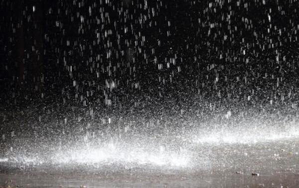
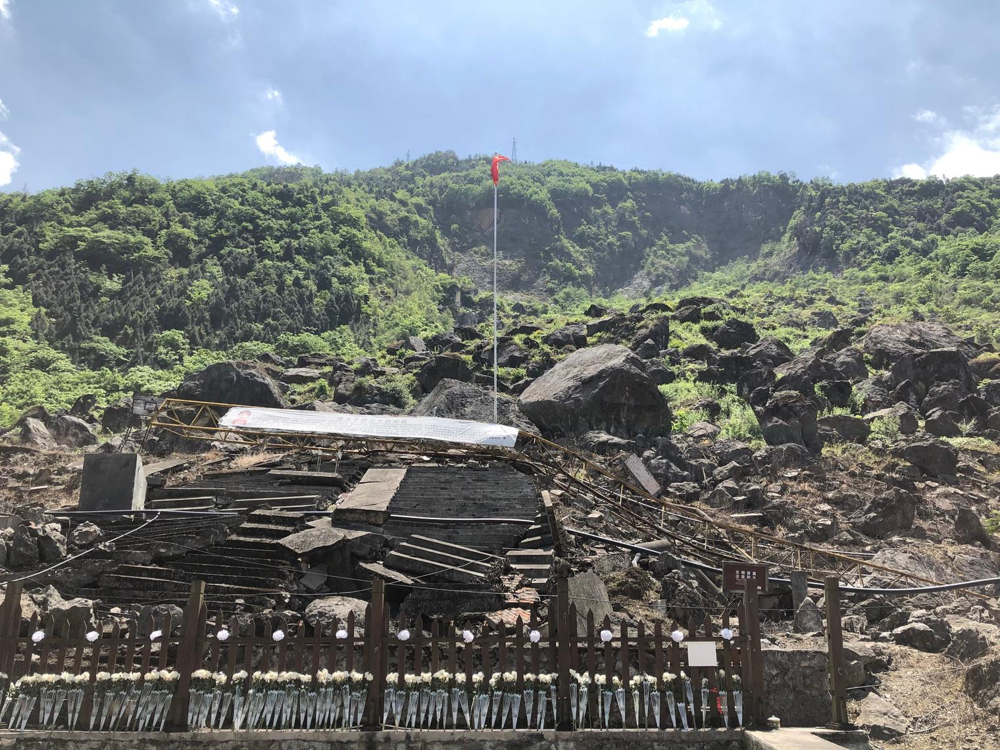

不久前好友相邀去深圳听了场《一席》。有一位演讲人王抒，演讲的题目叫《将登太行》，讲述他数十次往返古道“太行八陉”间的所见所思。最开始他想到的，全是这山路间的壮阔山水以及其上发生的大历史：政权变更、君王巡幸。渐渐地他开始注意古道上那些普通人的故事，逃难的流民、被屠戮坑杀的民众、被流放数十年得以重返的文人。然后他意识到，历史往往热衷于宏大话语，不会关注芸芸众生的记忆，而我们则常常容易被宏大叙事所裹挟，无视历史背后那些真实存在的人，忘记他们的汗水与血泪。
这个演讲留给了我深刻的印象。用以填写历史书册的空间是稀缺而昂贵的，所以历史偏爱那些可以化为浓墨重彩的材料，以为观者传达更普适而有力的观点、价值和立场。普通人的故事最多只能作为注脚。只有普适而有力的故事，才可以持久地生存下去，最终变成符号化、概念化的存在。
汶川大地震，到今天整十个年头了。这五个字在历史中凝结成了怎样的存在呢？
汶川大地震，也称2008年四川大地震或5·12大地震，发生于北京时间（UTC+8）2008年5月12日（星期一）14时28分04秒，震中位于中国四川省阿坝藏族羌族自治州汶川县映秀镇附近、四川省城成都市西北偏西方向79千米处。根据中国地震局的数据，此次地震的面波震级达8.2、矩震级达8.3（根据美国地质调查局的数据，矩震级为7.9），破坏地区超过10万平方千米。地震烈度可能达到11度。本次地震的地震波围绕地球传播了6圈，地震波及大半个中国及亚洲多个国家和地区。北至辽宁，东至上海，南至香港、广东、澳门、泰国、越南，西至巴基斯坦均有震感。
截至2008年9月18日12时，汶川大地震共造成69227人死亡，374643人受伤，17923人失踪。是中华人民共和国成立以来破坏力最大的地震，也是唐山大地震后伤亡最惨重的一次。地震造成四川、甘肃、陕西等省的灾区直接经济损失共8451亿元人民币，灾区的卫生、住房、校舍、通讯、交通、治安、地貌、水利、生态、少数民族文化等方面受到严重破坏。地震灾情引起民间强烈回响，全中国以至全球纷纷捐款援助，累积金额超过500亿元人民币。中国军方调动了和平时代以来规模最庞大的队伍进行救灾，中国民间的大批志愿者和来自中国各地以及世界各国的专业人道救援队伍也加入救灾。震后中华人民共和国政府宣布投入一兆元人民币，并采取“一省帮一县”的原则，用三年时间进行地震灾区的重建工作，计划在2010年基本实现目标。2012年初，时任四川省省长蒋巨峰宣布重建完成。
这是维基百科上“汶川大地震”这个词条的前两段。2008年对于中国人来说大概是记忆犹新的一年：年初的雪灾、五月的地震、八月的奥运会，有大起有大落。在没有受灾难影响、没有直接参与奥运盛事的人眼中，这些事情是什么模样呢？正常来讲应该和上面的文字相当，甚至更为符号化吧。这有什么不对吗？当然没有。
我至今还能想起历史书和纪录片对唐山大地震的零碎描述，深夜里熟睡的人们、突然裂开的地面、脱轨的火车、不断被强调的伤亡数字，以及大规模的救援行动。对于我，它只是几十年前、千里之外的一桩灾难罢了。它只是作为试卷上的一道题、饭席上的一个话题出现，然后被我抛到脑后。时间形成了绝对牢固的屏障，将历史固定在橱窗中，使其可供人观看，却不会动摇观者如今的生存现实。当历史所有的亲历者都离开这个世界的时候，所有实际的记忆也就消失了，剩下的只有叙述。这些叙述对我有任何要求吗？什么也没有。
或许直到我自己经历了地震。
那一年我高一。那天中午天气有些闷热，中午我去参加一对新人的婚礼，回到学校的时候快两点了，下午两点半就要上课，我决定不回宿舍了。路过小花园的时候停了几秒，看看池子里一朵朵的睡莲，心想夏天已经到了呢。
回到教室两点过一点，课代表在为下午的第一节课提前准备板书，我趴在书桌上，把头埋下想小睡一会。突然觉得是谁在放很吵的音乐，抬起头来，世界恍惚了起来。
人们叫嚷着冲出教室，叫嚷着从楼梯上涌下，叫嚷着、叫嚷着，直到四周安静下来。其实这过程很快，不过一两分钟，对于这座教学楼来言，它只是扭动了从没动过的身子，展现了石头也有的柔韧的一面。它并没有倒下，只是崩出一些看得见和看不见的裂缝。上课的铃声是否响起过呢？
通讯断绝。
操场迎来了整个学校的客人。人们清点着人数，包扎着伤口，分享心中的担忧。
通讯断绝。
人们排队领着食堂提供的应急晚餐，一个馒头或者一只鸡蛋。
通讯断绝。
人们冒着险回教室抢下一些桌椅，再回宿舍抢下一些被子。
通讯断绝。
人们路过小花园，只看到空荡荡的水面，从池里跳出池外的水。
通讯断绝。
光线渐渐暗下来，亮起应急的照明灯和星星点点的通讯设备。
通讯断绝。
地面不时又晃动起来，表明一切还远远没有结束。
通讯断绝。
下起了蒙蒙细雨。
通讯断绝。
天刚蒙蒙亮，我拿起自己的被子，独自一人走上了回家的路，进入了一个熟悉而未知的世界。这个世界很安静，大桥上的灯变成了碎片安静地躺在一个个灯柱下面，路面安静地裂成一条条纹路，我带着汗臭、抱着被子，安静地踌躇了一会，又安静地踏上桥去。
在一些大大的疑问之外，一个小小的疑问是，今晚会睡在哪里？这个问题，和许许多多问题，在之后的几个月里将不断响起，甚至回响到十年以后。
通讯断绝。
在十年之后的此刻，我也早已成为某种程度上的亲历者，以及叙述者。记载灾难的历史并不会记得这个运气不好也很不坏的我，可能也不会记得运气更好或更坏的那些我，我们都太普通，同时也太丰富。历史只有能力记得冰冷的梗概和定论，记不得有温度的丰富。我们每个人的记忆也同历史一样，记不下那么多。
时间就像是不会停的雨，在雨中看不见眼泪。但这场雨抹杀不了眼泪的真实，即使没有人叙述，即使没有人记得。
至少我们可以记得这种真实。

摄于2020.05.10：
